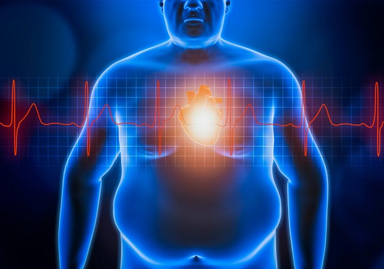

Complicaciones
medication Requiere diagnóstico medico¿Qué complicaciones le supone al cuerpo tener obesidad?
- cardíacas y complicaciones cerebrovasculares. Se aumentan las probabilidades de tener hipertensión arterial y niveles anormales de colesterol, que son factores de riesgo para la enfermedad cardíaca y los accidentes cerebrovasculares. 
- Diabetes Mellitus tipo 2. La obesidad puede afectar la manera en que el cuerpo usa la insulina para controlar los niveles de glucosa en la sangre. Esto aumenta el riesgo de resistencia a la insulina y de diabetes.
- Cáncer . La obesidad puede aumentar el riesgo de cáncer uterino, cuello del útero, endometrio, ovarios, mama, colon, recto, esófago, hígado, vesícula, páncreas, riñón y próstata.
- Complicaciones digestivas . Aumenta la probabilidad de desarrollar acidez estomacal, enfermedad de la vesícula biliar y problemas hepáticos.
- Apnea del sueño. Los individuos con obesidad son más propensos a tener apnea del sueño, un trastorno potencialmente grave en el que la respiración se detiene y se reanuda de forma repetida durante el sueño.
- Artrosis. La obesidad aumenta la presión ejercida sobre las articulaciones con carga completa del peso corporal, además de facilitar la inflamación dentro del cuerpo.
Estas patologías suponen un muy alto riesgo para las personas con obesidad, ya que se pueden presentar en cualquier momento conforme la obesidad siga evolucionando y no se le de un tratamiento adecuado y a tiempo.
Es de gran importancia conocer lo que puede traer él tener obesidad, ya que así generamos mayor conciencia de los factores y dificultades que se pueden presentar en nuestra vida cotidiana.